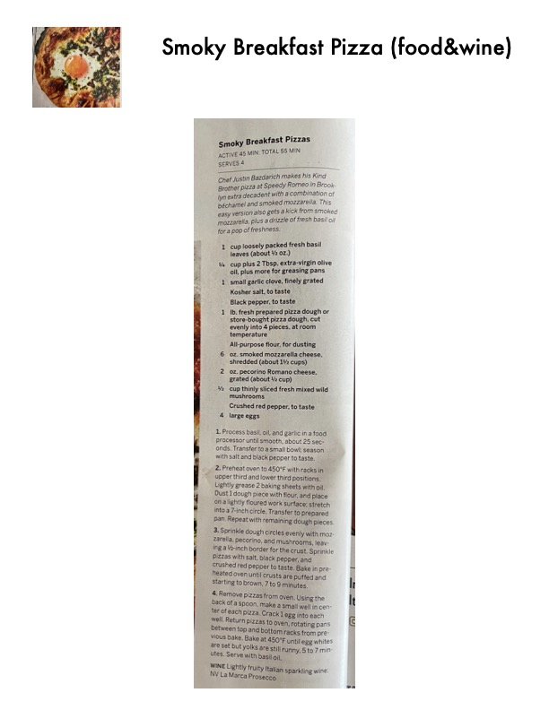

Smoky Breakfast Pizzas

Original cookbook page 184
Chef Justin Bazdarich makes his Kind Brother pizza at Speedy Romeo in Brooklyn extra decadent with a combination of béchamel and smoked mozzarella. This easy version also gets a kick from smoked mozzarella, plus a drizzle of fresh basil oil for a pop of freshness.
Prep: 45 minutes • Cook: 20 minutes • Total: 65 minutes
Ingredients
- 1 cup loosely packed fresh basil leaves (about ½ oz.)
- ¼ cup plus 2 Tbsp. extra-virgin olive oil, plus more for greasing pans
- 1 small garlic clove, finely grated
- Kosher salt, to taste
- Black pepper, to taste
- 1 lb. fresh prepared pizza dough or store-bought pizza dough, cut evenly into 4 pieces, at room temperature
- All-purpose flour, for dusting
- 6 oz. smoked mozzarella cheese, shredded (about 1½ cups)
- 2 oz. pecorino Romano cheese, grated (about ¼ cup)
- ½ cup thinly sliced fresh mixed wild mushrooms
- Crushed red pepper, to taste
- 4 large eggs
Instructions
- Process basil, oil, and garlic in a food processor until smooth, about 25 seconds. Transfer to a small bowl; season with salt and black pepper to taste.
- Preheat oven to 450°F with racks in upper third and lower third positions. Lightly grease 2 baking sheets with oil. Dust 1 dough piece with flour, and place on a lightly floured work surface; stretch into a 7-inch circle. Transfer to prepared pan. Repeat with remaining dough pieces.
- Sprinkle dough circles evenly with mozzarella, pecorino, and mushrooms, leaving a ½-inch border for the crust. Sprinkle pizzas with salt, black pepper, and crushed red pepper to taste. Bake in preheated oven until crusts are puffed and starting to brown, 7 to 9 minutes.
- Remove pizzas from oven. Using the back of a spoon, make a small well in center of each pizza. Crack 1 egg into each well. Return pizzas to oven, rotating pans between top and bottom racks from previous bake. Bake at 450°F until egg whites are set but yolks are still runny, 5 to 7 minutes. Serve with basil oil.
Recipe #184 from collection